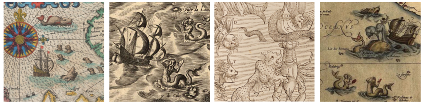

Exploring uncharted genomic territory using similarity search tools

"As more scientists come to rely on genome annotation, it will become more important for the scientific community as a whole to contribute to this continuing process." - Lincoln Stein (2001)
The genomes of metazoan organisms are packed with dense layers of information, and genome annotation is a challenging, long-term endeavour. Consequently, most published genome sequences are comprised of DNA that is incompletely understood in terms of its evolutionary origins and functional significance.
Sequence similarity searches, such as those implemented in the basic local alignment search tool (BLAST) program, can be powerful devices for investigating genome sequence data without relying on previously generated annotations.
Excitingly, much can now be discovered by examining genomes "in silico" - in other words, by analysing genome sequence data using a computer. While experimental studies are required to characterise genome features at a functional level, comparative sequence analysis can often provide crucial insights.
The genome's buried treasure
As genomes evolve over time, some of the information they contain becomes obscured. There are a number of processes that contribute to this:
(i) Evolutionary 'dynamism'. Whereas some genes undergo relatively measured change under natural selection, others evolve according to selective forces that strongly favor diversification, or are relatively ephemeral. These more 'chaotic' selective pressures may drive highly dynamic patterns of evolution (e.g. changes in structure and copy number) are to - to a greater or lesser extent - obscured when examining contemporary sequences.

Bryce Canyon: Geological structures show the impact of erosion over macroevolutionary time scales. Similar processes operate in genomes, which are in part shaped by mutational decay of redundant information.
(ii) Erosion. Genes that become redundant for one reason or another will tend to decay, being gradually eroded and fragmented by mutation. Progress in genomics has underlined the dynamic nature of genomes, which can not only diverge through macrogenomic processes such as chromosomal rearrangements and karyotype evolution, but also through the activity of transposable elements, and the incorporation of horizontally transferred genetic material.

Palimpsests - manuscript pages used in archaeology that have been written on more than once, with earlier writing incompletely erased.
(iii) Horizontal transfer. Occasionally, metazoan species acquire genes from one another, or from microbes (e.g. viruses and bacteria). Sequences that have arisen through horizontal transmission have an unpredictable distribution across genomes, and are often highly degraded pseudogenes. For these reasons, they are frequently absent from or incompletely captured by existing annotations.

Exploring genomes *in silico*
Much like a web search engine, BLAST can be used to monitor and explore an unstable data source – the expanding pool of molecular sequence data represented in genome sequence databases.
Indeed, similarity searches can be used to perform the further characterization of sequences retrieved via BLAST. For example, BLAST can be used to detect specific sequence features at protein or nucleic acid level (e.g. inversions, repeats, conserved protein motifs, oligonucleotide primer sites). BLAST is also a useful tool for performing rapid genotyping of sequences, and for generating alignments, particularly when the sequences being aligned have heterogeneous structures.

To facilitate efficient heuristic, similarity search-based investigations, we developed an approach called database-integrated genome screening (DIGS), in which the output of similarity searches is captured in a relational database.
Related Publications
Zhu H, Dennis T, Hughes J, and RJ Gifford
(2018)
Database-integrated genome screening (DIGS): exploring genomes heuristically using sequence similarity search tools and a relational database.
[preprint]